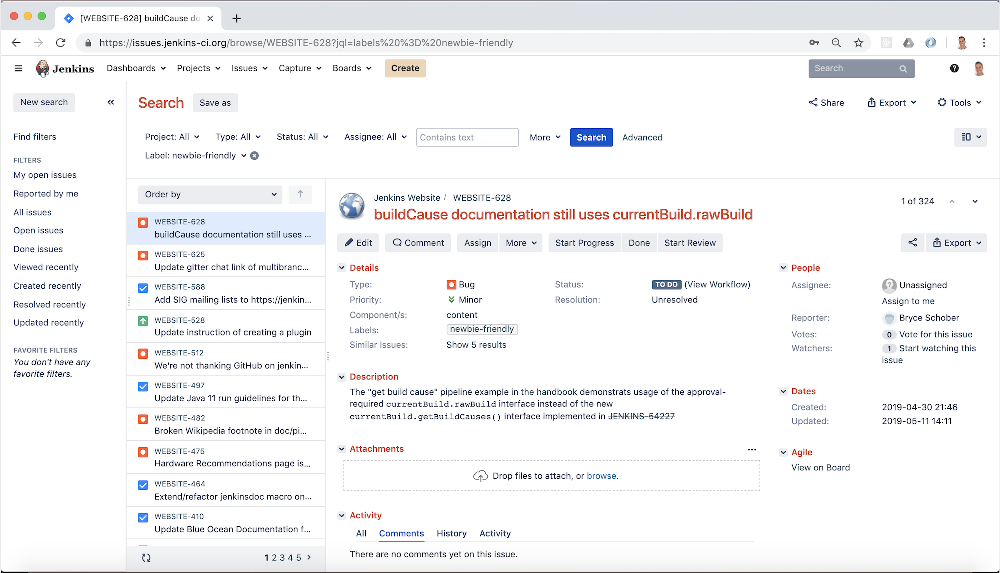
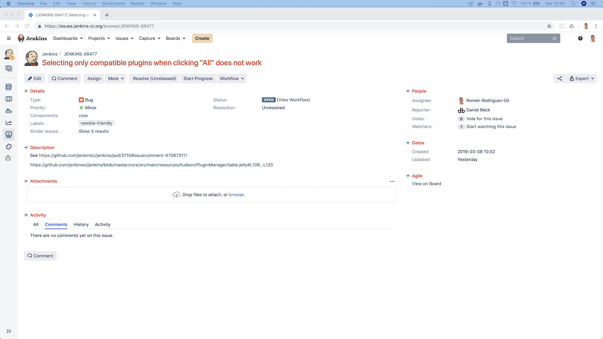
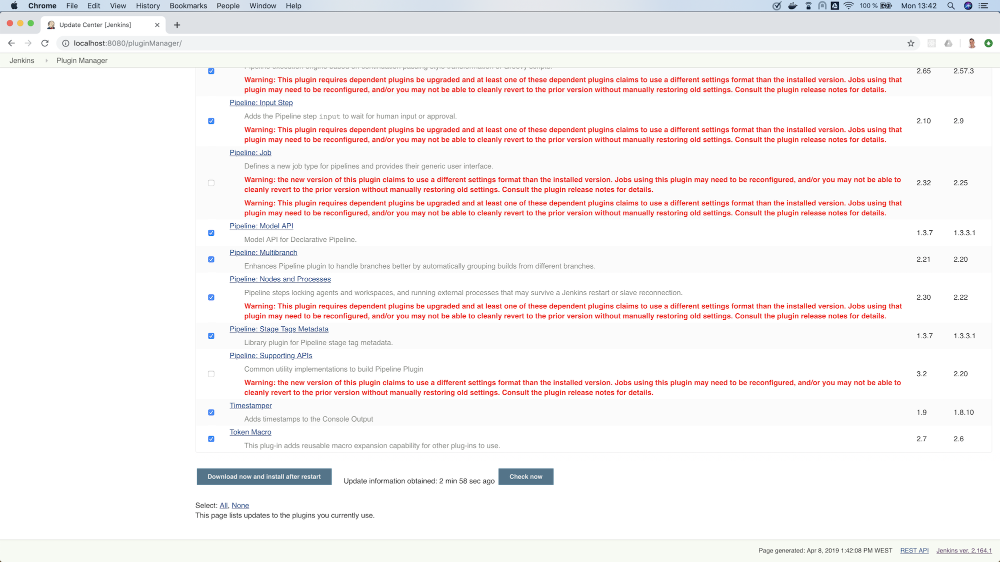
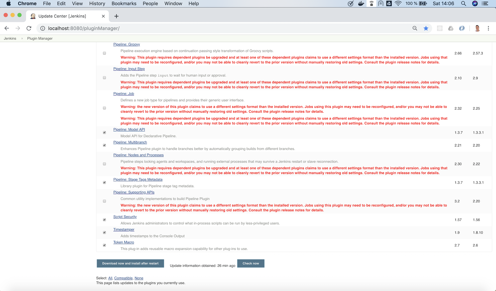
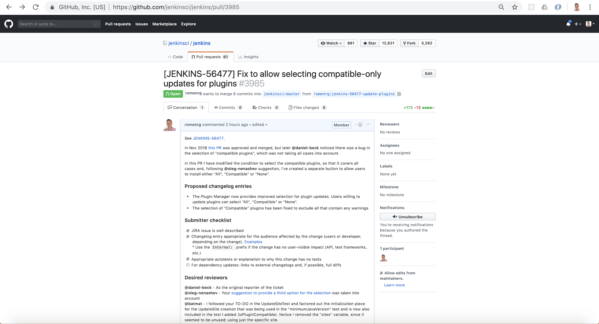

成为一名 Jenkins 贡献者：对新手友好的工单
两个月前，我发表了一篇介绍性文章， 成为一名 Jenkins 贡献者的旅程。在那篇第一次发表的文章 review 过后，学习到了我们可以参与和贡献的多种途径。 因此，在这个站点仓库中有对首次、基础的贡献的描述。
现在，我们将会在这篇文章中探索更多高级的贡献，向 Jenkins 核心中提交代码。
从工单和过程开始
新手贡献指导以及 Jenkins Jira
查看位于 jenins.io 上的开发者章节可能是最好的起点， 参考链接也很方便。同时，向 Jenkins 贡献的新手指导也很有用，因为它指出了不同的仓库、工具（例如问题跟踪系统）以及治理文档。 此外，它还描述了提交消息、代码风格约定、PR 指导等的最佳实践。
一旦我们对之前描述的有了一般性的了解，并想要真正地开始编码，我们可能会对该做些什么感到困惑。
似乎浏览Jenkins 问题跟踪系统是顺其自然 的下一步，因为那里充满了已经由社区报告了的潜在的缺陷和待改进的部分。然而，你很容易被无数的可能性列表所淹没。 请记住一点，对于一个像这样有十年历史之久的项目，很多是为新手准备的。因此，通过newbie-friendly tickets来过滤可能是最好的主意。

选择一个工单
在我案例中，我花了一些时间来浏览带 newbie-friendly 标签的工单，直到发现了一个我似乎感兴趣并看起来有能力修复的：

过程
在这个阶段，当我们准备接手这个工单时，最好让社区中的其他人知道我们正在开始解决它。我们可以很容易做到这一点， 只要把工单分配给我们自己即可（查看工单概览下的 “_Assign_” 按钮）。
在 Jenkins 的 Jira 中把工单分配给我们自己的话，可以让其他的贡献者知道我们正在处理；另外，为了保证其他人有兴趣对此一起做贡献时，可以知道 该去联系谁或者如何询问状态。也就是说，把工单分配给你自己，并不意味着其他贡献者就无法继续推进。Jenkins 是一个开源项目，欢迎任何人创建他们自己 的 PR，因此，任何人都可以在工单中提出自己的方案。但是，你也能想到，如果工单分配给某个人的话，大多数人在开始工作前也可能会去联系承接人。
与之相关的是，请牢记当我们把工单分配给自己时，不应该在这个工作上拖延太久。其他的贡献者，可能会由于工单已被分配而忽略。
当我们马上就要开始工作时，推荐的做法是先点击”Start Progress“按钮。这个动作，会把状态修改为“_In progress_”，对社区而言， 意味着我们正在处理这个工单。
在我们的电脑设置必要的工具
配置，安装和测试
正如在该旅程的第一篇文章中描述的，开始为某个仓库做贡献的第一步 是首先派生到我们自己的 GitHub 账号下，然后，克隆到你的电脑上。
正如，在 Jenkins Core 仓库中的CONTRIBUTING 文件里 所描述的，让仓库在本地运行的必要步骤。它包括，安装必要的开发工具：Java Development Kit (https://adoptopenjdk.net/[OpenJDK] 为推荐的选择)，Maven 以及任意支持 Maven 项目的 IDE。注意，安装 JDK 和 Maven 的步骤在贡献指南中有链接。
当安装并配置好所需要的工具后，我们就准备好了在本地构建 Jenkins，也可以运行测试。
开始干活
复查工单细节
现在，我准备好开始处理工单了，我必须仔细查看细节，以便全面地理解问题所在。
我计划处理的工单的描述中有两个链接。第一个是，体现真正缺陷的截图。它展示出当点击按钮”所有“时，几个不兼容的插件是如何被选中的，甚至尽管预期的行为是仅选中兼容的插件。 第二个链接是代码片段的引用，它展示了当检查一个插件更新是否与当前版本兼容时需要考虑的校验。
本地复现问题
尽管我现在已经对该缺陷的细节了解清楚了，但还没有亲眼见过。因此，对我而言，下一个符合逻辑的步骤就是在本地复现。
为了在我们的电脑上复现该缺陷，可以利用源代码构建出 Jenkins的本地 war 文件，或者也可以
下载最新可用的 Jenkins 版本，并在本地运行。
当我处理该工单时，最新可用的版本为 2.172；当我自行构建源码时看到的版本为 2.173-SNAPSHOT，也就是社区正在进行的下一个版本。
通常来说，在本地复现缺陷是一个好的主意，这不仅仅是为了能更好的理解，也可以确保问题真实存在。它可能只在报告者的环境中发生（例如：一些用户 错误的配置）。或者，是已经修复了的久的缺陷。也有可能是某人在工单还没有提出时已经修复了。或者，可能是贡献者在修复后忘记了更新工单的状态。
因此，基于以上的所有原因，我在本地运行最新版本的 Jenkins。从终端进入到 war 文件所在的目录，然后运行 java -jar jenkins.war，
就会在本地启动 Jenkins，访问路径为 http://localhost:8080。
从首页上，切换到插件管理页面（在左侧点击 “_管理 Jenkins_” 的链接，然后选择在列表中选择 “_管理插件_”）。
在管理插件的页面中，有一个插件更新的列表。对我而言，由于复用了之前安装的旧的 JENKINS_HOME 目录，已经有一些插件出现在这里，并需要
更新。这使得我可以测试这个假定会失败的行为。
当我点击了底部的“全选”选项，得到了如下结果：

正如在它在工单中报告的，该行为是不一致的。在上一个版本中，”全选“的行为已经改变（试图改进），是为了只选中兼容的插件。然而， 正如在截图中看到的，该行为并未像期待的那样。现在，不管是“全选”还是“兼容性的“插件都会被选中，一些有兼容性问题的插件也会被无意中被选中。
尝试修复
当在阅读原始 PR 中关于“全选”行为变更的讨论时，我看到了一个采用分离的”兼容性的“按钮的建议，而保留”全选“按钮的传统行为。 我喜欢这个主意，因此，我决定把它作为我的变更提议的一部分。
在这个阶段，我对需要做的变更有了清晰的想法。包括：1)界面UI，为“兼容的”插件增加一个按钮，2)当按钮点击后 JS 代码应用变更，然后3) 后端的方法来决定一个插件是否为兼容的。
应用变更
正如在贡献指南中推荐的，我创建了一个独立的 feature 分支来处理这个工单。
复查完代码后，我花了一些时间来搞清楚应该做哪些修改，包括前端和后端的代码。关于我修改的更多细节，你可以看一下在我的 PR 中的变更。
简单总结下，我了解到经典的 Jenkins UI 是使用Jelly来编写的，
在了解它的基本原理后，我修改文件 index.jelly 让包括新的选择器，并关联检查兼容性插件的函数到这个选择器上，当点击 “_全选_” 时
复用已有的函数 “toggle” 来勾选所有的复选框。我同时必须要为未经检查兼容性的情况修改 JavaScript 函数 checkPluginsWithoutWarnings 的行为，因为现在已经有了一个真正的 “_全选_” 按钮，未经检查的情况不再考虑。然后，我在类 UpdateSite.java 中添加了一个后端的 Java 方法 isCompatible，
来调用所有检查不同的兼容性的方法，并最终返回一个结果。在这次修改中，我还增加了一个自动化测试来验证该方法的正确行为，为项目增加了代码测试覆盖率。
最后，我修改了文件 table.jelly 来从前端调用后端的方法，替换了之前没有把所有类都考虑进去的方法。
正如你所看到的，变更涉及到了不同的技术，甚至你遇到的是简单的场景，却不是很熟悉。我的建议是，不要让这些困难让你停止了前进的脚步。作为一名软件工程师， 我们应该专注于让我们永远不过时的技能，而不是只了解特定的技术； 在特定的场景下，要适应不同的框架，学习一切为了完成任务所需要的新技术，采用跨框架的原则和最佳实践以提供高质量的方案。
结果
经过上面的修改后，UI 界面上出现一个新的选项，三个选项对应的行为也如预期的一致：

发布变更
提交一个 Pull Request
在 Jenkins 核心仓库里的贡献指南中，有一章关于变更提议的内容，描述了为我们的变更创建一个 Pull Request (PR) 所必须要遵守的步骤。
此外，这个仓库中还有一个PR 模板， 将会在创建一个新的 PR 时自动加载，作为一个让我们给复查者提供必要信息的基础。我们期望的是：工单链接，描述变更的变更日志条目， 完成提交者的检查单，并提醒期望的复查者（如果有的话）。
在我的案例中，我在创建 PR 时遵照模板，完成了所有部分。 我添加了 Jira 工单链接，提供了两条变更日志条目，完成了提交者的检查单，并增加了三位期望的复查者（并介绍了我为什么认为条目的复查会是有价值的）。 我还添加了工单中提到的原始 PR 链接，以便提供更多的上下文。

通过和合并的流程
正如在贡献指南中申明的，一个 PR 需要有两个人通过才能被合并；这可能需要几天到几周的时间。有时候，有一个复查者通过了，一周后没有额外的复查
也认为足够设置 PR 为 ready-for-merge。然而，合并所需要的时间以及通过的数量可能不同，这取决于变更的复杂度或者对 Jenkins Core 的影响面。
当收到必要的通过建议后，一个 Jenkins Core 的维护者讲会把 PR 设置为 ready-for-merge，并会在准备下次发布时被合并到 master 分支。
对我而言，在提交 PR (四月十四日)当天，我收到了 Daniel（工单的报告者，也是我“期望的复查者”）的复查。他给出了几个非常有用的建议，
我据此进行了修改。之后，Daniel 再次复查我的 PR 并给了一些小的备注，并被核准。之后一周，没有任何动态，我根据 Daniel 的建议增加了一些修改，
最后，Daniel 通过我的 PR，这使得 PR 添加上了 ready-for-merge 的标签，并在后来的某天被合并了（四月二十六日）。

发布
每次新的发布，仓库的维护者会选择被添加 ready-for-merge 标记的 PR 合并到 master 分支，准备变更日志（通常会采用 PR 作者的提议）并
继续创建新的版本。此时，PR 的作者不需要有额外的参与。
每周，Jenkins 都会发布一个新的版本，因此，当你的 PR 被合并后，你的变更非常有可能会成为下一个每周发布版的 Jenkins 的一部分。
最终，你的变更也会到达长期支持 (LTS) 版本，这是一个不同的发布线，目标是更加保守的用户。 这个发布线是与每周发布的版本选择同步的，每12周一个最新的每周发布版会作为新的 LTS 版本基线。在此期间，中间的 LTS 版本只会包括重要的缺陷修复， 来自每周发布版 cherry-pick。新的功能通常会等到下一个 LTS 的基线被确定后。
鉴于在这篇博客中描述的例子，在合并后 *它发布在了 Jenkins 2.175*（每周发布版）。并可能会包括在下一个 LTS 中，
应该是在下个月发布（2019年6月）。
完工！
就这么多！到此，我们已经覆盖了向 Jenkins Core 提出一个新的提议的完整生命流程。我们回顾了从流程的开始，在 Jenkins 缺陷跟踪系统中挑选 一个工单；一直到最后，发布我们的变更到一个新的 Jenkins 版本。
如果你从未但是想要做贡献，我希望这篇文章能够激励你回到标记了 newbie-friendly 的工单列表中，
找到一个你感兴趣的，按照上面描述的步骤，知道你看到自己的变更发布到了一个新的 Jenkins 版本中。
记住，不要尝试在你的首个工单中解决一个复杂的问题，有很多更轻松的方法你可以做贡献，而且，不管多小都是有帮助的！